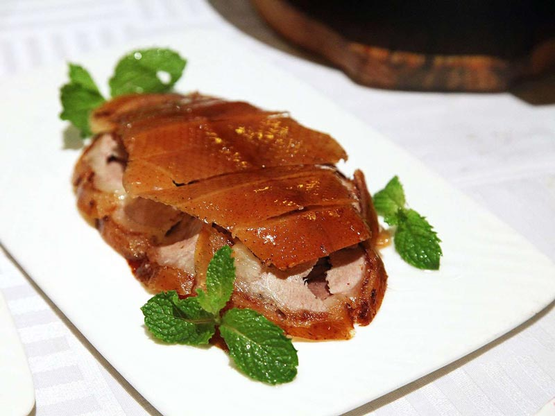
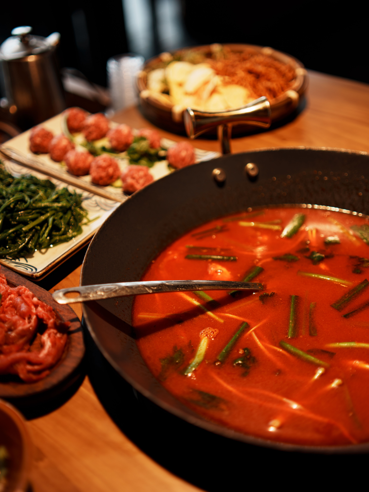
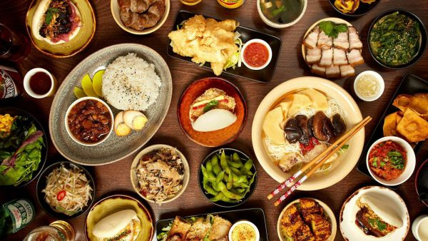

Dimsum
Món ăn nổi tiếng với nhiều loại bánh hấp nhỏ xinh, thường dùng cùng trà.
HƯƠNG VỊ TRUNG HOA
Mỗi món ăn là một câu chuyện về văn hóa và truyền thống.
Món ăn nổi tiếng với nhiều loại bánh hấp nhỏ xinh, thường dùng cùng trà.

Nhiều loại mì với nước dùng đậm đà và cách chế biến đặc trưng từng vùng.

Lớp da vàng giòn, thịt mềm, thường ăn cùng bánh mỏng và nước sốt.

Nồi lẩu nóng hổi với nhiều loại nguyên liệu và nước dùng phong phú.

Khám phá các món ngọt truyền thống và những thức uống đặc sắc.

Tìm hiểu sự khác biệt về hương vị giữa các vùng miền Trung Quốc.